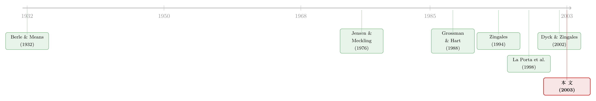

同一家公司，两种股票，两个价格——控制权的价钱，写在一国的法律里
本文读的是 Nenova (2003, Journal of Financial Economics)：在 18 个国家、661 家「同股不同权」公司里，作者用多票股与少票股的价差，把「控制权那一整块投票权」值多少钱量了出来——它在韩国接近公司市值的一半，在芬兰却几乎为零；而法律、执法、投资者保护与收购规则，能解释这种跨国差异的 68%。
1 一家公司，为什么会有两个价格？
先讲一个看上去不该发生的现象。
设想一家公司，发行了两类股票。它们对公司未来现金流的索取权一模一样：每股分到的红利相同，清算时拿到的钱相同。唯一的区别是，一类股票每股带一票，另一类每股一票都没有（或者票数更少）。按教科书里最朴素的逻辑，既然现金流权完全相同，这两类股票就该是同一个价。
可现实里，它们几乎从来不是同一个价。带票的那一类，往往卖得更贵。这个差价——「投票溢价」(voting premium)——就是本文故事的起点。
一个自然的问题随之而来：一张选票，凭什么值钱？散户手里的一票，几乎决定不了任何事。开股东大会，你那一票淹没在成千上万票里，对谁当董事、谁做 CEO 毫无影响。既然如此，市场为什么愿意为它多付钱？
答案藏在一个词里：控制权。一张孤零零的选票确实不值钱，但当足够多的票攒成一个「控制块」(control block)、足以决定公司大事时，它就值钱了——因为掌握控制权的人，可以攫取那些不分给小股东的控制权私利 (private benefits of control)：往董事会塞自己人、搭建商业帝国、把资产用非市场价格转移给关联方、慷公司之慨给自己发福利。
于是逻辑接上了：一个想夺取控制权的大股东，在控制权争夺战中，愿意为小股东手里的票出一个正的价格，最高出到他预期能从控制权里捞到的好处。市场预期到了这一天会到来，今天就提前把这份期望折现进了带票股票的价格里。这条「票价—私利」的链条，最早由 Zingales (1994)、Rydqvist (1996)、Modigliani 和 Perotti (1998) 等人讲清楚。
接着，一个更尖锐的问题浮出来：既然控制权私利的多寡，本质上取决于一国的法律对小股东保护得严不严、大股东偷东西的成本高不高——那么，控制权的价钱，会不会在不同国家天差地别？ 这正是本文要回答的核心。在此之前，投票溢价的实证研究全都局限在单个国家里（意大利、瑞典、加拿大、美国……），各做各的，口径不一，谁也没法跟谁比。本文的野心，是造一把跨国可比的尺子，然后用它去丈量法律与控制权价值之间的关系。
（关于「把股票挂到一部更严的法律下、控制权私利就会贬值」这条平行的思路，可参见《租一部更严的法律，老板手里的「控制权」就贬值了》与《把股票挂到纽约，老板就少偷一点》。）
2 先把直觉算一遍：一个最干净的例子
在动用任何数据之前，作者用一个数字例子把「控制权值多少」这件事掰开揉碎。这个例子值得一步步走完，因为后面所有的测量都是它的放大版。
一家股权分散的公司，可验证现金流 1000 美元，发了 100 股：50 股有票、50 股无票。在没有任何控制权私利的世界里，每股不论有没有票都值 10 美元。
现在让公司只活两期，不贴现。第二期来了两个争夺控制权的人，他们对控制权的估值是 100 美元（这是在 1000 美元可验证现金流之外、额外的私利）。要拿下控制权，需要 50% 的投票权，即 25 股有票股票（这 25 股对应的可验证现金流是 250 美元）。于是最优的、能赢下控制权的报价是 350 美元 买这 25 股——250 美元买它们的现金流，外加 100 美元买控制权。
折算到每一股：一个手握有票股票的人，在第二期能拿到 350/25 = 14 美元。比无票股票的 10 美元，多出来的 4 美元，就是「控制权争夺战发生那一刻」一张票的价值。
但争夺战不一定每一股都用得上。设这场争夺战在第二期发生的概率是 100%，而任意一张有票股票真正被争夺者需要到（即落在那决定性的 50% 里）的概率是 50%。于是回到第一期，一张票今天的市场价值是 4 × 50% = 2 美元：有票股票卖 12 美元，无票股票卖 10 美元。
把这条逻辑倒过来走，就是本文测量的全部要义：
- 我们能观察到的，只有两类股票的价格（12 和 10），票本身的价值不可直接观察，要从两个价差里「反推」出来；
- 用无票股票的价格（10）当作有票股票里「可验证现金流」那一块的度量，价差（2）就是期望折现后的票价；
- 但 2 美元是被「争夺概率」稀释过的。最关键的一步，是把这个概率除回去，还原出争夺战发生时每股票的真实价值（4 美元）；
- 最后把控制块里的票加总：25 张票 × 4 美元/张 = 100 美元，正好等于控制权的总价值。
这里有个容易被忽略的细节：作者刻意加总整个控制块的票，而不是只看一张票。原因是单张票的价值不可跨公司比较——它取决于多票股每股集中了多少投票权、两类股票的相对数量、公司的规模。文中举例：同样是控制块值 100 美元，若只有 10 张有票股、90 张无票股，控制权用 5 票就能拿下，每票就值 20 美元而不是 4 美元。所以唯一有意义的口径，是「控制块全部票的总价值，再除以公司市值」。
值得强调的是这个测量的保守性质：争夺者绝不会为控制权付出超过他预期能捞到的私利。因此用票价反推出来的控制块价值，是真实控制权私利的一个下界 (lower bound)。文中那个韩国式的「半个公司市值」，意味着实际私利只会更高。
3 核心方程：把价差翻译成「控制权占公司价值的几成」
把上面的例子写成可用于真实数据的公式，就是本文（推导见作者另一篇 Nenova, 2001）的测量核心。对每家公司，控制块投票权占公司市值的比例为：
其中 \(P_M(t)\)、\(P_L(t)\) 是第 \(t\) 周多票股与少票股的收盘价，\(N_M\)、\(N_L\) 是两类股票的股数，\(k\) 是少票股与多票股的投票权之比。价格取 1997 年 1 月 1 日到 12 月 31 日每周五收盘，共 52 个观测，最后对全年取平均。
这就是那把「跨国可比的尺子」。它把一个抽象的问题——控制权值多少——变成了一个每家公司都能算出的、以「占公司市值的百分比」为单位的数。
4 识别：真正难的不是价差，是「概率」和那些「与票无关」的差异
到这里，故事看似简单：拿价差，套公式，比国家。但作者花了整整一节去对付两个让这把尺子「失准」的麻烦——这也是全文方法论上最较真的地方。
第一个麻烦：控制权争夺的概率。 还记得例子里那个「除回去」的步骤吗？价差只是被概率稀释后的票价，要还原真实票价，必须先估出「这家公司的票会在控制权变更中被需要」的概率。传统文献用持股结构粗略地代理，本文则用沙普利值 (Shapley value)——具体是 Milnor 和 Shapley (1978) 为「海洋博弈」(oceanic games) 提出的连续版本——来度量每个股东在投票博弈中有多大概率是「关键的一票」(pivotal)。数据覆盖所有持股 5% 以上的股东。
这个选择有个尖锐的副作用，值得点出：香港样本里所有公司都是绝对控股，控制权几乎不可能易手，沙普利值算出来是零。结果就是香港控制块的（未调整）票价测出来是负的（均值 −0.0288，中位数 −0.0152），而一旦控制了公司特征，香港的票价根本无法估计——因为要除以一个为零的概率。这不是 bug，而是「控制权早已被锁死、市场不再为夺权预期付费」的真实反映。
第二个麻烦：与投票权无关的价差。 两类股票的价格差，未必全来自票。它们可能分红不同、流动性不同、持有成本不同。如果不剔除这些，就会把「分红溢价」误当成「投票溢价」。于是作者一并控制了：股利差异（少票股相对多票股的超额分红、是否累积分红）、流动性差异（两类股票换手率之比的对数）、以及持有成本（多票股是否有少票股没有的登记成本）。本文一个重要的方法论结论正是：忽略这些控制项，会对票价的测量造成系统性偏差。
这一步是本文相对前人单国研究的实质进步。把分红、流动性、持有成本从价差里「洗」出去之后，剩下的才是干净的投票溢价。否则你测到的「控制权价值」里，混着一堆跟控制权毫无关系的东西。
5 数据与第一组事实：差异大到惊人
样本是 DATASTREAM 覆盖的、1995 年市值最大的 30 个国家里全部上市的「同股不同权」公司，最终 661 家、横跨 18 个国家、数据年份 1997。同股不同权在巴西、加拿大、北欧、德国、意大利、韩国、瑞士等地很常见；在中国、日本、新加坡、西班牙等国则被法律禁止或限制（例如在中国，外资股丧失投票权；在西班牙，投票权必须与现金流权成比例）。
第一组描述性事实就足够震撼。按法律渊源 (legal origin，沿用 La Porta et al., 1998 的分类) 分组看控制块票价的中位数：
- 法国民法系 (French civil law)：22.6%
- 德国民法系 (German civil law)：11.0%
- 普通法系 (common law)：1.6%
- 斯堪的纳维亚民法系 (Scandinavian civil law)：0.5%
四组之间的中位数两两都有统计上的显著差异。具体到国家，反差更刺眼：法国均值 0.2805（中位数 0.2747，n=9）、意大利 0.2936（0.2993，n=62）、墨西哥 0.3642（0.3652，n=5）；而美国只有 0.0201（中位数 0.0071，n=39）、加拿大 0.0276（0.0047）。韩国的中位数高达 0.6000——控制块的票，值大半个公司。
作者还给了一个极生动的换算：在巴西，一个握有 50% 投票权的人，可以只拥有低至六分之一的现金流权；而他从控制权里得到的期望收益，平均至少是这个数的两倍——占公司价值的 33.3%。换句话说，出一份钱，拿走两份的好处。
一个更直白的对照：未调整的控制块票价，在普通法国家平均 4.5%，在法律渊源为法国、投资者保护更弱的国家平均 25.4%。法律越松，掏空的成本越低，控制权私利越高，票价就越被推高。这条因果链，正是全文要钉死的那一根。
6 主结果：法律解释了 68% 的跨国差异
描述性事实之后，作者把控制块票价对一组制度变量做回归，看看法律到底能解释多少。这组变量包括（构造见原文 Table 2）：
- 法治水平 (Rule of law)：来自 ICR 评级，越高越严；
- 投资者保护 (Investor protection)：六个指标的平均（能否邮寄代理投票、股东大会前股票是否被冻结、是否允许累积投票、是否有受压迫少数股东条款、是否有优先认购权、召开临时股东大会所需投票比例是否≤10%）；
- 收购规则 (Takeover regulations)：三个指标的平均（是否要求对所有股票类别给同样的要约价、是否要求收购大宗/多数股权时按类别给小股东同价、强制全面要约触发线的高低）；
- 公司章程条款 (Charter provisions)：六项把权力集中到大股东手里的章程安排（金股、连尾条款、毒丸、投票上限等）。
结论是：投资者保护质量、收购规则（同价与强制要约）、章程条款、以及执法力度，合起来解释了控制块票价系统性变异的 68%。
更有意思的是这几股力量的「拆解」。作者构造了一个「最坏情形」的思想实验：一家股权分散的公司，四个法律变量都取样本内最低值。在这种环境下，控制块票价平均高达 48%——近半个公司的价值被控制权吃掉。然后逐一把变量从最差改到最好：
- 把执法从最低改到最高：48% → 31%；
- 再把投资者保护拉满：31% → 20%；
- 再把收购规则拉满：20% → 8%；
- 最后把集权式章程条款从全用改成全不用：8% → 5%。
投资者保护和收购规则的影响量级相当，但作者特别强调：执法是关键。法律写在纸上不算数，能不能执行才决定控制权值多少。（这与 La Porta 一脉「法律的现实力量取决于执行」的判断一致，相关讨论可见《法律是行李，风土是地基》。）
7 文献脉络
把这篇论文放回它生长的那条线上看，脉络很清晰。
最早，是 Berle 和 Means (1932) 与 Jensen 和 Meckling (1976) 奠定的「所有权与控制权分离」「经理人与股东的代理冲突」这套底层语言。接着，控制权私利从「经理 vs 股东」转向「大股东 vs 小股东」，Grossman 和 Hart (1988) 的「一股一票与公司控制权市场」给出了本文测量所依赖的理论框架——也正是这篇，奠定了用价差识别票价的逻辑。

然后，是把这套理论变成实证的一代人：Zingales (1994) 用米兰股票交易所的数据测投票权价值，Rydqvist (1996) 用瑞典数据，Zingales (1995) 又问「什么决定了公司投票权的价值」。但他们都困在单个国家里。
与此同时，另一条河流也在涨水：La Porta、Lopez-de-Silanes、Shleifer 和 Vishny 的「法律与金融」纲领——La Porta et al. (1997, 1998) 把法律渊源、投资者保护与金融发展连起来，Claessens et al. (2000) 讨论法律如何塑造所有权结构。
本文的位置，正是这两条河的汇流处：它把投票溢价的实证方法（Grossman-Hart、Zingales 一脉）搬到跨国数据上，再用「法律与金融」一脉的制度变量去解释跨国差异。它与几乎同期的 Dyck 和 Zingales (2002)——用大宗股权交易的国际比较测私利——是一对互补的孪生研究：一个看大宗交易的溢价，一个看少票股的价差，殊途而同归。
（用大宗股权交易「砍价」反推私利的那条路，可对照《控制权的私利，到底值多少钱？》；而在法律近乎缺席时大股东能掏走几成，可见《拍卖桌上量出来的「掏空」》。）
8 评论与延伸（Q&A + 研究方向）
(a) 几个可能的疑问
Q：用少票股价格当「可验证现金流」的度量，会不会本身就有偏差？
会，但作者正是为此引入了一整套控制项。少票股与多票股若分红不同、流动性不同、持有成本不同，价差里就混入了非投票因素。本文把股利差异、换手率之比、登记成本逐一控制后，剩下的才当作干净的投票溢价——并明确指出，不做这些控制会造成系统性偏差。这也是它相对单国研究的方法论贡献之一。
Q：测出来的是「控制块票价」，凭什么说它等于控制权私利？
严格说不等于，作者也没这么说。它是私利的一个下界——因为夺权者绝不会为控制权付出超过他预期能捞到的好处。所以当韩国测出「半个公司市值」时，真实私利只会更高，不会更低。把它当下界来读，结论才稳。
Q：香港的票价测出来是负的，是数据错了吗？
不是。香港所有样本公司都绝对控股，控制权几乎不可能易手，作为概率代理的沙普利值算出来是零，市场自然不为「夺权预期」付费。负值与无法估计，恰恰忠实反映了「控制权早被锁死」的现实，而非测量失败。
Q：68% 的解释力，会不会只是法律渊源在「打包」别的东西（文化、发展水平）？
这是最该警惕的地方。法律渊源与人均收入、文化、市场发展高度相关，回归里很难干净地把「法律」从「发展阶段」中剥离。作者用了执法、投资者保护、收购规则、章程四个相对具体的制度变量而非单纯的法系虚拟变量，缓解了一部分，但跨国回归的内生性始终是这类研究的软肋。68% 该读作「相关性的解释力」，而非纯粹的因果。
Q：和「投票溢价」(voting premium) 是一回事吗？
不完全是。投票溢价通常指单张票的价格，本文刻意转向整个控制块的总价值。原因前面讲过：单张票价不可跨公司比较，会被多票股的投票权集中度、两类股票相对数量、公司规模污染。加总控制块、再除以市值，才得到可跨国比较的量。这个口径上的转换，是本文的关键设计。
Q：北欧国家是民法系，按理控制权该值钱，为什么反而接近零？
这是个反直觉的点。本文引用 Agnblad et al. (2001) 对瑞典的解释：控制方「守法且看重声誉与社会地位」，这种非正式的社会约束抑制了对小股东的侵害。换句话说，正式法律之外，社会规范也能压低控制权私利——这提醒我们，「法律渊源」并不能机械地预测一切。
(b) 几个可能的研究问题与提案
1. 控制权价值与公司债定价。 - 【经济故事】控制权私利越大，大股东越有动机把资源从公司（连带债权人）手里转走，债权人理应索取更高利差。本文的「控制块票价」恰好是一个现成的、跨国可比的私利下界。把它接到信用利差上，能直接检验「掏空风险是否被债市定价」。 - 【可行性】中。需要把同股不同权公司样本与其债券二级市场利差（如 TRACE 之外的国际数据、或 Bloomberg）匹配，跨国债券流动性与口径是主要障碍；识别上可用法律渊源/执法作为私利的工具变量。
2. 外资持有人能否压低控制权私利？ - 【经济故事】外资机构往往带来更强的治理诉求与「用脚投票」的压力。若一国某些公司外资持股更高，控制块票价是否更低？这把「外资是监督者还是过客」的争论，接到了一个可量化的私利指标上。 - 【可行性】高。可在本文框架上叠加各国外资持股数据（如 FactSet/被动指数纳入事件），用指数纳入带来的外生外资流入做识别。与《外资真是「蝗虫」吗？》的问题天然衔接。
3. 票价的时间序列：危机会重定价控制权吗？ - 【经济故事】本文是 1997 年的横截面快照。但控制权私利在繁荣与危机中应有不同：危机里现金更宝贵，掏空动机更强，还是夺权概率骤降、票价反而塌缩？把这把尺子做成面板，能看到控制权价值的周期性。 - 【可行性】中。需要把同股不同权公司的双类股票价格拉成多年周频面板，沙普利值需逐年重算持股结构；数据可得性因国而异，北欧、巴西、加拿大较好。
4. 收购规则改革作为自然实验。 - 【经济故事】本文把「强制全面要约」「同价规则」识别为压低票价的关键。许多国家在 2000 年代后陆续引入或收紧收购法。用这些改革做前后对照，能把跨国回归里洗不掉的内生性，换成更干净的「准自然实验」识别。 - 【可行性】高。欧盟 2004 年收购指令 (Takeover Directive) 的成员国差异化落地，提供了交错的政策时点，适合做交错双重差分（注意近年对交错 DiD 估计量偏误的修正）。
9 我的判断
这篇论文的贡献，不在某一个惊人的系数，而在它造了一把尺子，并用它把一个长期只能在单国里零敲碎打的问题，第一次摆到了 18 国的同一张台子上。「控制块票价」这个口径——加总整个控制块、用无票股剔除现金流、用沙普利值还原概率、再扣掉分红与流动性——既保守（是私利的下界）又可比，此后被大量后续研究当作标准件来用。把它和 Dyck-Zingales (2002) 的大宗交易法并置，两条独立的测量殊途同归地指向「法律弱则私利高」，这种交叉验证本身就很有说服力。
对识别的担忧也很实在。最大的隐患是跨国回归的内生性：法律渊源与发展水平、文化、市场成熟度纠缠在一起，68% 的解释力很难说有多少是「法律」本身、多少是它打包携带的别的东西。沙普利值作为夺权概率的代理也有它的强假设——它度量的是「投票博弈里的关键性」，但真实世界的控制权变更还受业绩、行业、收购防御等一大堆因素影响，香港那个「概率为零」的角落就是这套代理张力的集中体现。此外，样本是 1997 年单一横截面，无法回答控制权价值随时间、随周期如何变化。
我最想看到的后续，是把这把尺子从「横截面」推向「面板+事件」：用收购法改革、指数纳入带来的外资流入、跨境上市这些外生冲击，去检验控制权价值会不会真的被「重定价」。如果它会，那本文相关性的结论就能升级成更硬的因果；如果它顽固地不动，那才更有意思——说明真正锁住控制权价值的，或许是法律条文之外那些更慢、更深的东西。
参考文献
- Agnblad, J., Berglof, E., Hogfeldt, P., Svancar, H. (2001). Ownership and control in Sweden: Strong owners, weak minorities, and social control. In Barca, F., Becht, M. (Eds.), The Control of Corporate Europe. Oxford University Press, 228–258.
- Barclay, M., Holderness, C. (1989). Private benefits from control of public corporations. Journal of Financial Economics 25, 371–395.
- Berle, A., Means, G. (1932). The Modern Corporation and Private Property. Macmillan, New York.
- Claessens, C., Djankov, S., Lang, L. (2000). The separation of ownership and control in East Asian corporations. Journal of Financial Economics 58, 81–112.
- Dyck, A., Zingales, L. (2002). Private benefits of control: An international comparison. NBER Working Paper 8711.
- Grossman, S., Hart, O. (1988). One share-one vote and the market for corporate control. Journal of Financial Economics 20, 175–202.
- Jensen, M., Meckling, W. (1976). Theory of the firm: Managerial behavior, agency costs, and ownership structure. Journal of Financial Economics 3, 305–360.
- La Porta, R., Lopez-de-Silanes, F., Shleifer, A., Vishny, R. (1997). Legal determinants of external finance. Journal of Finance 52, 1131–1150.
- La Porta, R., Lopez-de-Silanes, F., Shleifer, A., Vishny, R. (1998). Law and finance. Journal of Political Economy 106, 1113–1155.
- Milnor, J., Shapley, L. (1978). Values of large games II: Oceanic games. Mathematics of Operations Research 3, 290–307.
- Modigliani, F., Perotti, E. (1998). Protection of minority interest and the development of security markets. Managerial and Decision Economics 18, 519–528.
- Nenova, T. (2001). How to dominate a firm with valuable control: Regulation, security-voting structure, and ownership patterns of dual-class firms. Working paper, Harvard University.
- Nenova, T. (2003). The value of corporate voting rights and control: A cross-country analysis. Journal of Financial Economics 68(3), 325–351.
- Rydqvist, K. (1996). Takeover bids and the relative prices of shares that differ in their voting rights. Journal of Banking and Finance 20, 1407–1425.
- Shleifer, A., Vishny, R. (1997). A survey of corporate governance. Journal of Finance 52, 737–783.
- Zingales, L. (1994). The value of the voting right: A study of the Milan stock exchange experience. Review of Financial Studies 7, 125–148.
- Zingales, L. (1995). What determines the value of corporate votes. Quarterly Journal of Economics 110, 1047–1073.